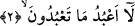
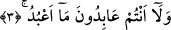
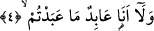
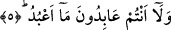

Orada Kureyş’ten bir kalabalık vardı. Onların başında durdu ve bu sûreyi okudu. İşte o
vakit Allah Rasûlü’nden ümidlerini kestiler. O’na (s.a.) ve ashâbına eziyet etmeye
başladılar.[241]
Bu âyette, nefis sıfatının zulmeti ve tabiatın izleriyle aslî istîdâdlarının nûrunu
perdeleyen, ğayr ile meşgûl olduğu için Hak’tan mahrûm kalanlara işâret edilmektedir.
2. Ben sizin tapmakta olduklarınıza tapmam.
İleride de tapmayacağım. Çünkü “lâ” harfi umûmiyetle muzârî fiilin başına gelir ve
gelecek zaman ifâde eder. Tıpkı “mâ” olumsuzluk edatının muzârînin başında şimdiki
zaman ifâde ettiği gibi. Nitekim “len” harfi, “lâ”nın nefyettiği şeyi tekîd etmektedir.
Meşhûr dil âlimi Halîl b. Ahmed, “len”in aslında “lâ” olduğunu söylemiştir. Buna göre
âyetin mânâsı, “ilâhlarınıza ibâdet etmem husûsundaki talebinizi gelecekte de
yapmayacağım” demektir.
3. Siz de benim taptığıma tapmıyorsunuz.
Siz de benim ilâhıma ibâdet etmeniz husûsundaki talebimi gelecekte yapmayacaksınız.
Söylenmek istenen şudur: Siz mûteber bir kulluk edecek değilsiniz. Çünkü Allah’a ortak
koşarak yapılacak bir kulluk mûteber bir kulluk olamaz.
4. Ben de sizin taptıklarınıza asla tapacak değilim.
Daha önce, sizin taptığınız şeylere tapmış değilim. Câhiliye devrinde bile puta
tapmadım ki İslâm geldikten sonra böyle bir şey benden nasıl beklenebilir?
5. Evet, siz de benim taptığıma tapıyor değilsiniz.
Siz de hiçbir zaman benim kulluk ettiğim Allah’a ibâdet etmediniz. Görüldüğü gibi